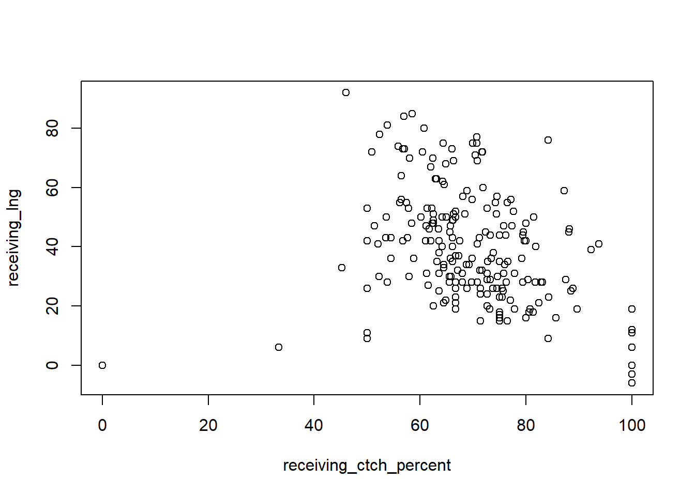
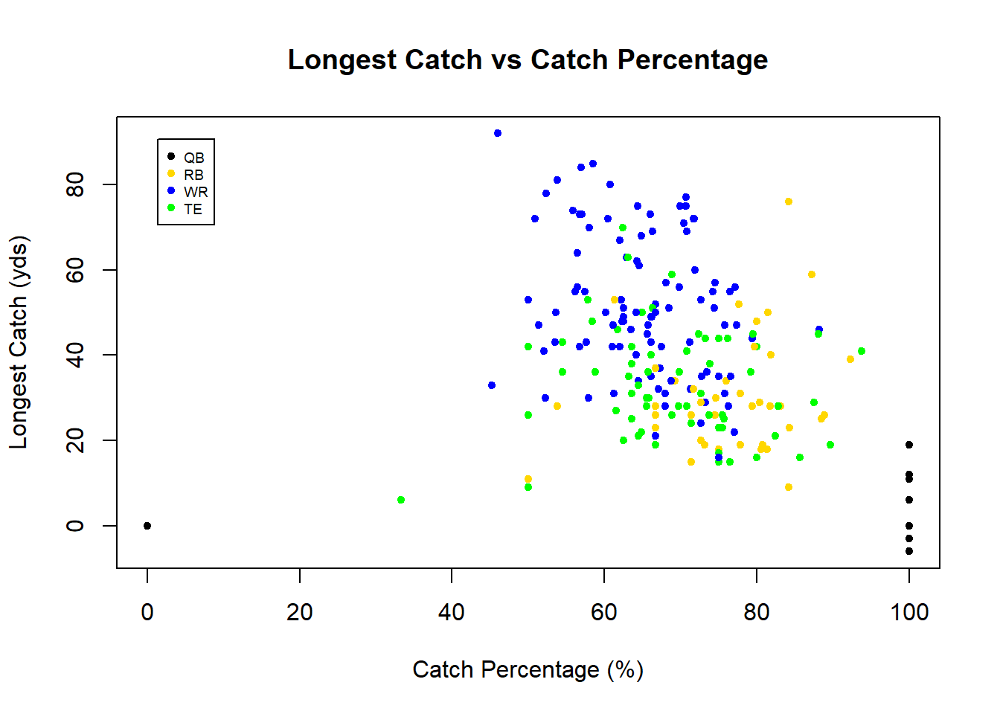

4.1 base
Before the development of ggplot and the grammer of graphics (discussed in the next subsection), R users largely relied on base to construct data visualization. base R provide flexible but verbose solutions to construct any type of graph.
At the heart of visualizations with base is the generic function plot which is used for plotting R objects. Most simply, plot is used to construct a scatter plot. It takes either a formula (e.g. plot(y~x, data = dt)), specifying that we wish to plot column y on the vertical axis and x on the horizontal axis, or specifications for the coordinates of x and y (e.g. plot(x = dt$x, y = dt$y)).
rush_receive <- filter(rush_receive, pos %in% c('QB', 'RB', 'WR', 'TE'))
# formula
plot(receiving_lng~receiving_ctch_percent, data = rush_receive)
Notice, the plots are fundamentally the same. The only differences are the axis labels. These can be adjusted with plotting parameters. Rather than outline all of the parameters, we refer you to the following figure provided by Holtz (2018), software engineer for Datadog. His website, The R Graph Gallery, is an excellent resource for those who wish to dig deeper into data visualizations.

Figure 4.1: common plotting parameters for base R plots
Let’s use some of these parameters to clean up the previous scatterplot. We’ll create a title, label the axes, change the character used for the points, and color the points based on the position of the player.
plot(receiving_lng~receiving_ctch_percent, data = rush_receive,
main = 'Longest Catch vs Catch Percentage', # title
xlab = 'Catch Percentage (%)', # x-axis label
ylab = 'Longest Catch (yds)', # y-axis label
pch = 20, # point type
col = pos) # point color 
If we color the points by position, then we need to provide our readers with a legend illustrating what each color represents. As previously mentioned, base R is incredibly flexible, so tweaking a plot (such as adding a legend) is almost always possible. However, doing so can be a real headache. To illustrate the verbosity of base, we will illustrate how to add a legend to the previous plot. There are generally two ways people proceed, both of which are drastically more involved and cumbersome than that of ggplot. For this reason, among others, we prefer ggplot to base visualizations.
It is of the author’s humble opinion that aesthetic attributes such as color, shape, fill, among others should never be added to a plot unless it provides further information about the data of interest. That is, do not add flare for flare’s sake. Every element of a plot should portray some bit of information.
The first method is to partition the data by position and add the position’s points iteratively to the scatterplot, specifying a new color for each of them. Essentially, we construct the full plot with black points before overwriting the points, one position at a time, with colored points. While easy to comprehend, this method is incredibly verbose and involves duplicate code.
plot(receiving_lng~receiving_ctch_percent, data = rush_receive,
main = 'Longest Catch vs Catch Percentage', # title
xlab = 'Catch Percentage (%)', # x-axis label
ylab = 'Longest Catch (yds)', # y-axis label
pch = 20) # point character
points(x = rush_receive[rush_receive$pos == 'QB', ]$receiving_ctch_percent,
y = rush_receive[rush_receive$pos == 'QB', ]$receiving_lng,
pch = 20, col = 'black')
points(x = rush_receive[rush_receive$pos == 'RB', ]$receiving_ctch_percent,
y = rush_receive[rush_receive$pos == 'RB', ]$receiving_lng,
pch = 20, col = 'gold')
points(x = rush_receive[rush_receive$pos == 'WR', ]$receiving_ctch_percent,
y = rush_receive[rush_receive$pos == 'WR', ]$receiving_lng,
pch = 20, col = 'blue')
points(x = rush_receive[rush_receive$pos == 'TE', ]$receiving_ctch_percent,
y = rush_receive[rush_receive$pos == 'TE', ]$receiving_lng,
pch = 20, col = 'green')
legend("topleft",
legend = c('QB', 'RB', 'WR', 'TE'),
col = c('black', 'gold', 'blue', 'green'),
pch = 20,
pt.cex = 1,
cex = 0.6,
text.col = "black",
horiz = F,
inset = c(0.05, 0.05))The second method is to replace the vector of positions with a vector of colors. This can be done by matching the position to a respective color. It is important to ensure that the order of the colors used in the match function is the same order specifed in the legend; otherwise, you may be misleading your reader by falsely claiming, for example, that black points represent wide receivers when in fact they represent quarterbacks. While less verbose, this method is prone to transcription mistakes in this way.
plot(receiving_lng~receiving_ctch_percent, data = rush_receive,
main = 'Longest Catch vs Catch Percentage', # title
xlab = 'Catch Percentage (%)', # x-axis label
ylab = 'Longest Catch (yds)', # y-axis label
pch = 20, # point type
col = c('black', 'gold', 'blue', 'green')[match(rush_receive$pos,
c('QB', 'RB', 'WR', 'TE'))]) # point color
legend("topleft",
legend = c('QB', 'RB', 'WR', 'TE'),
col = c('black', 'gold', 'blue', 'green'),
pch = 20,
pt.cex = 1,
cex = 0.6,
text.col = "black",
horiz = F,
inset = c(0.05, 0.05))
While we outlined the common base plotting parameters using a scatterplot, they also apply to a vast array of other base plots such as bar plots, line plots, histograms, etc. To read more about base plots, see this helpful link.
References
Holtz, Yan. 2018. “Help and Inspiration for R Charts.” The R Graph Gallery. https://www.r-graph-gallery.com/.